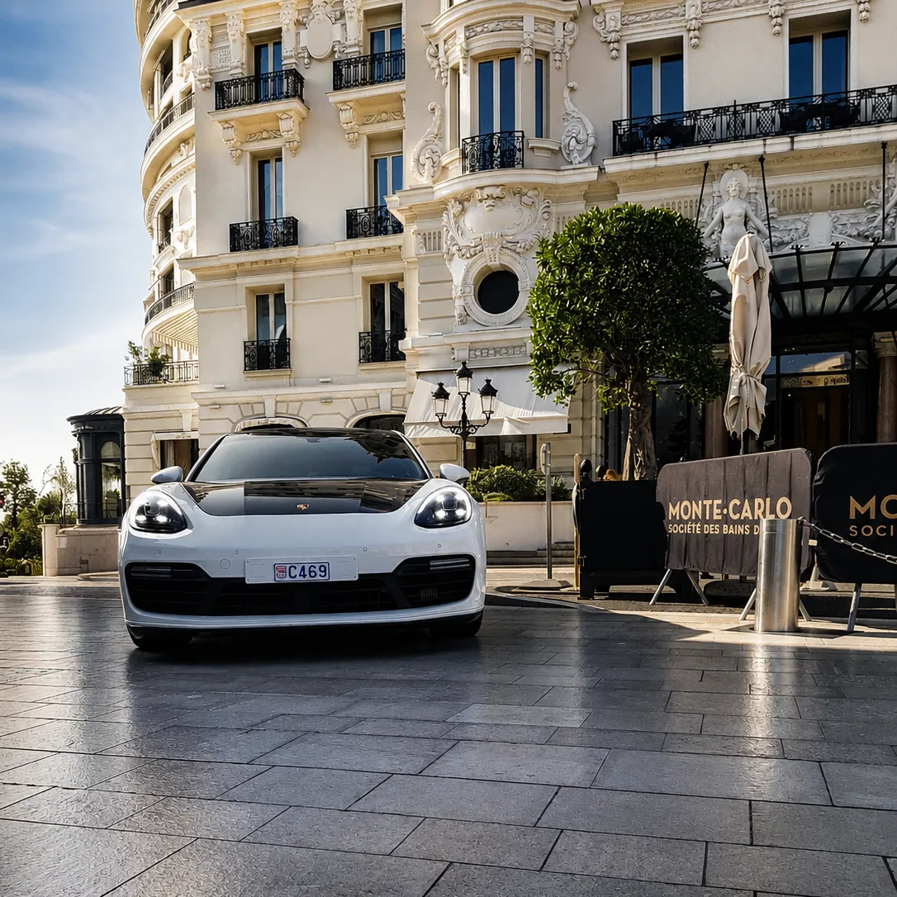
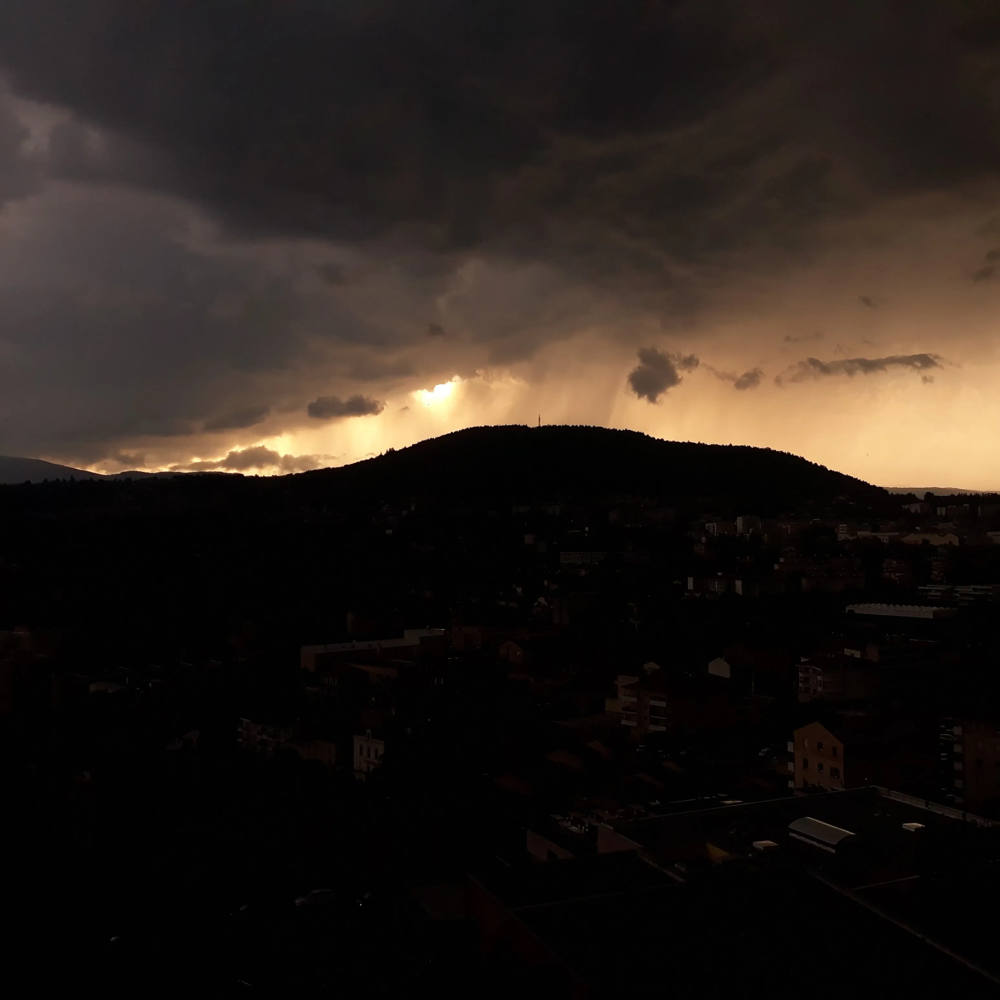
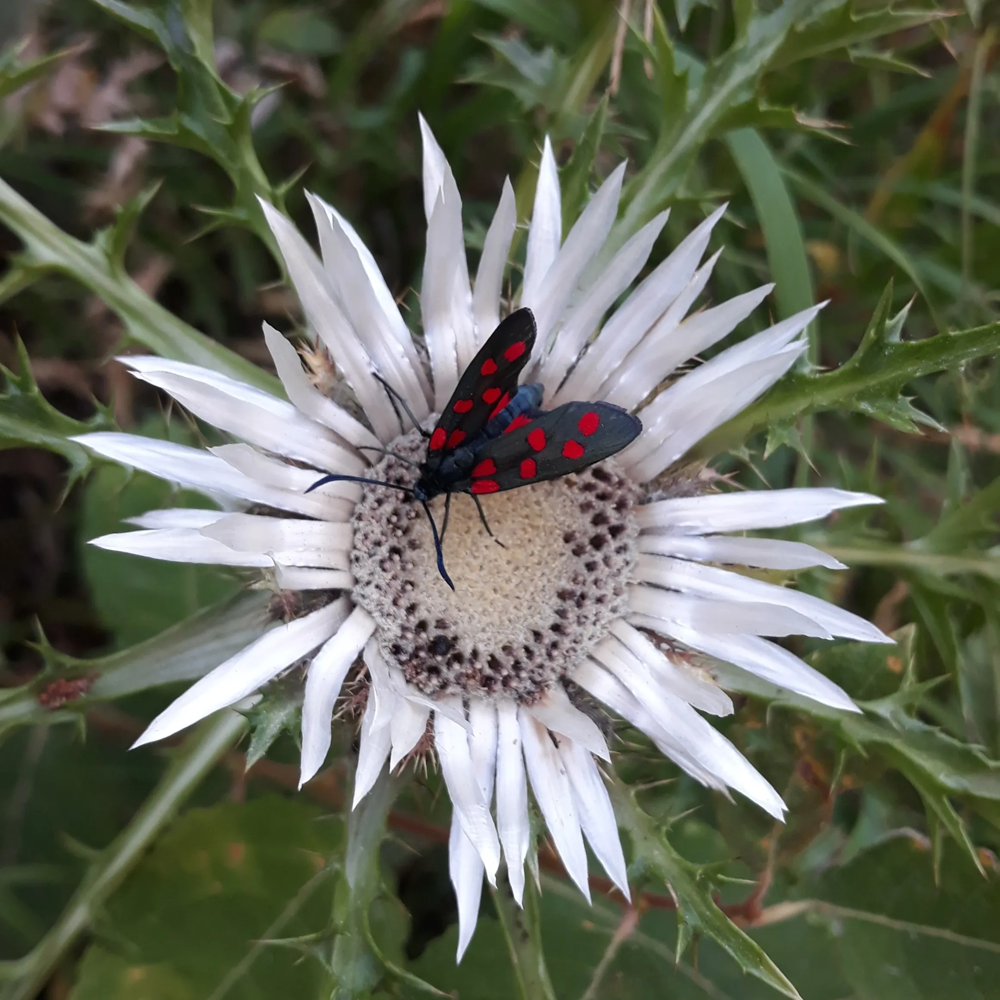
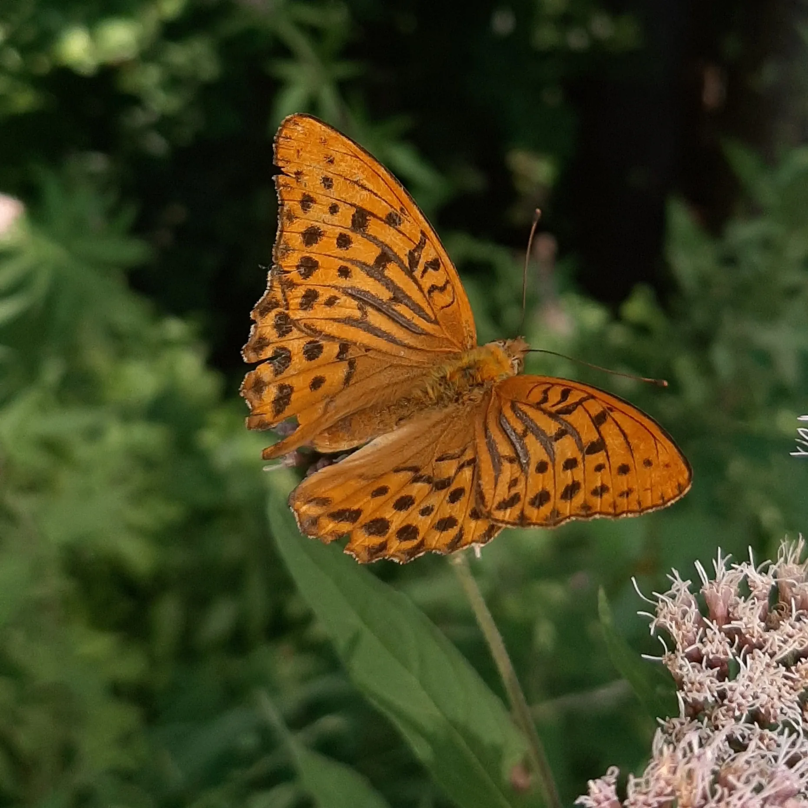

En dehors du code
Mes centres d'intérêt
Quelques paysages, animaux et voitures photographiés au fil de mes sorties.







En dehors du code
Quelques paysages, animaux et voitures photographiés au fil de mes sorties.



